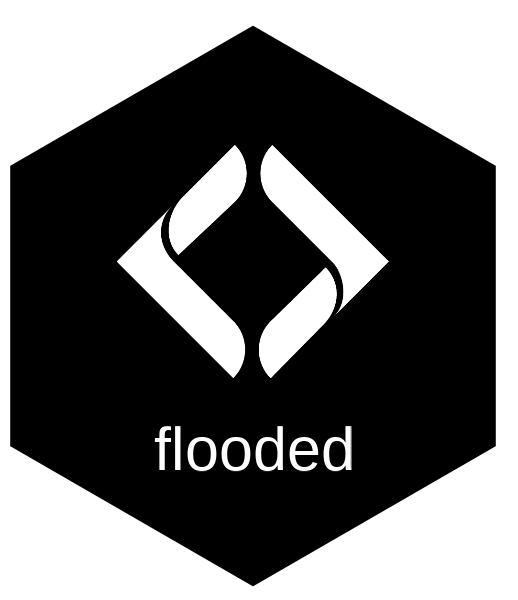
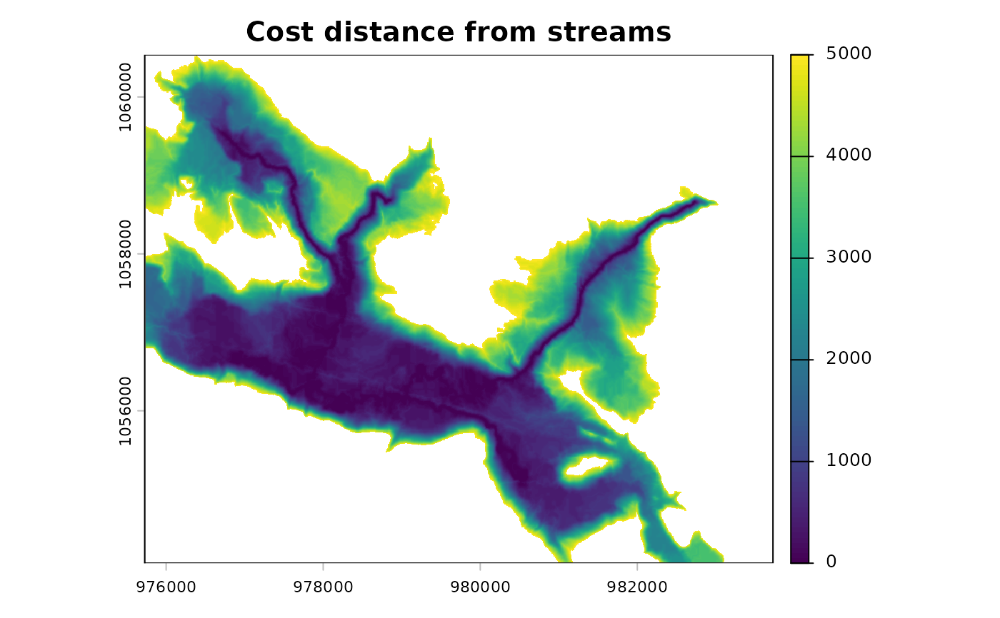

Accumulated cost distance from stream cells
Source:R/fl_cost_distance.R
fl_cost_distance.RdComputes the least-cost distance from every cell to the nearest stream cell, accumulating friction (typically slope) along the path. Stream cells are seed points with cost zero.
Arguments
- friction
A
SpatRasterof movement cost per cell (e.g., percent slope). Higher values = harder to traverse.- streams
A
SpatRasterof rasterized streams (output offl_stream_rasterize()). Any non-NAcell is treated as a seed point.
Value
A SpatRaster of accumulated cost distance. Stream cells have
value 0; other cells increase with cost-weighted distance from the
nearest stream.
Details
Uses terra::costDist() which implements a push-broom algorithm for
weighted distance. The friction raster defines per-cell traversal cost
and streams identifies seed cells (cost = 0).
Cells that are NA in friction are impassable barriers.
Examples
dem <- terra::rast(system.file("testdata/dem.tif", package = "flooded"))
slope <- terra::rast(system.file("testdata/slope.tif", package = "flooded"))
streams <- sf::st_read(
system.file("testdata/streams.gpkg", package = "flooded"),
quiet = TRUE
)
stream_r <- fl_stream_rasterize(streams, dem, field = "upstream_area_ha")
cost <- fl_cost_distance(slope, stream_r)
terra::plot(cost, main = "Cost distance from streams", range = c(0, 5000))
